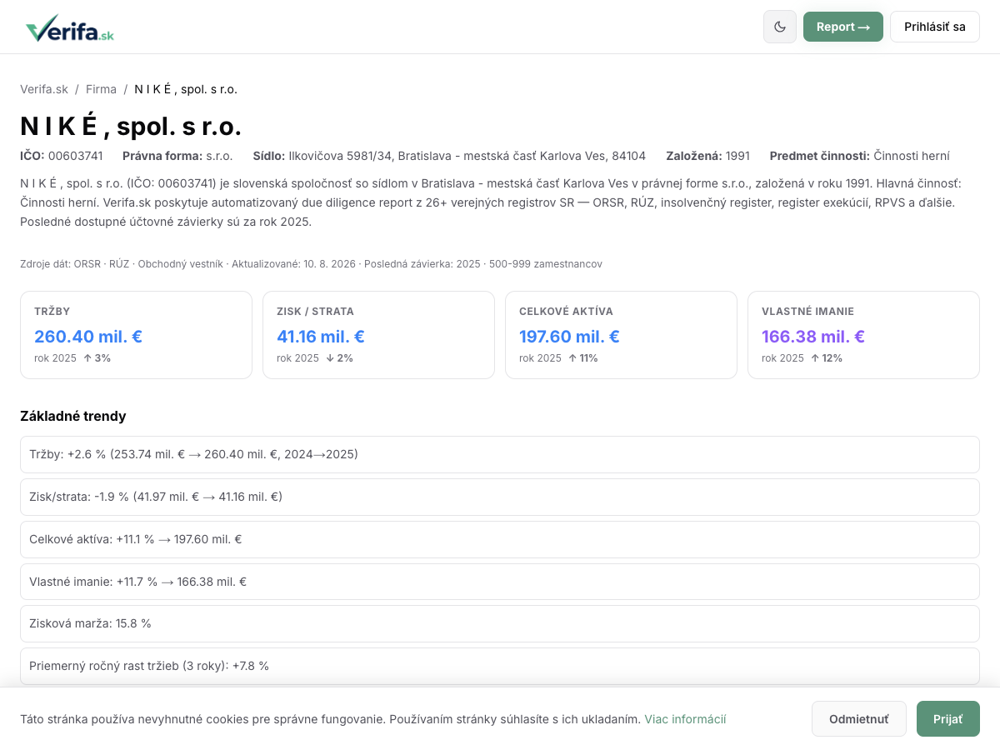
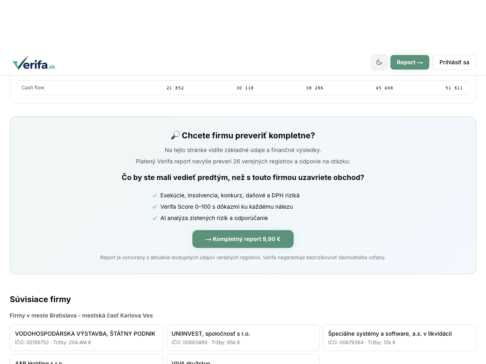
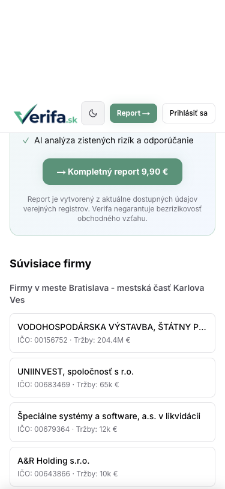
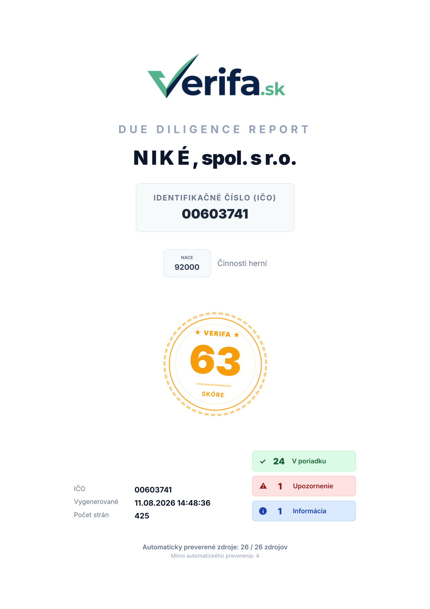
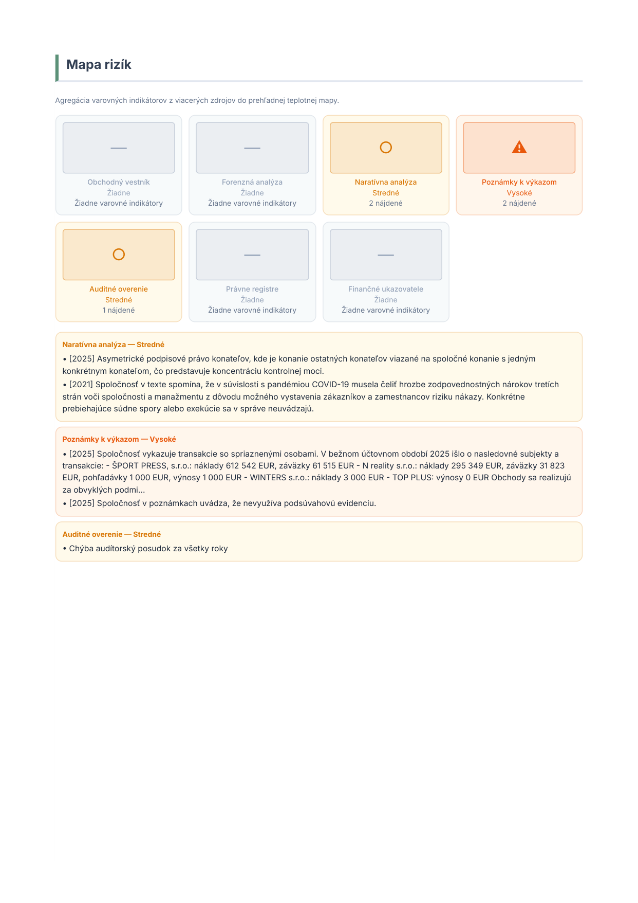
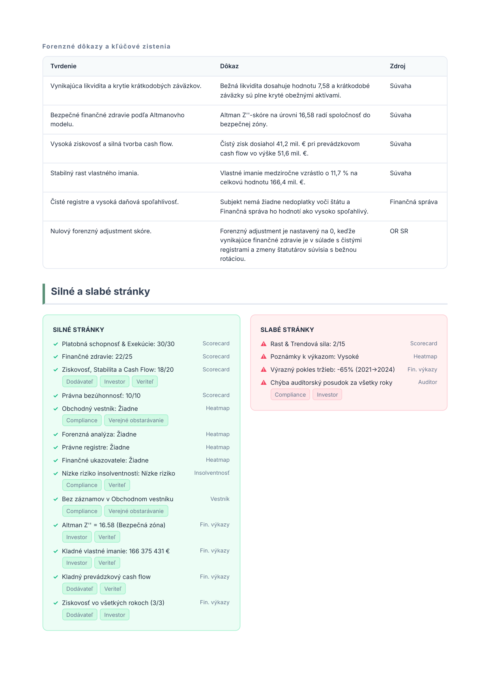
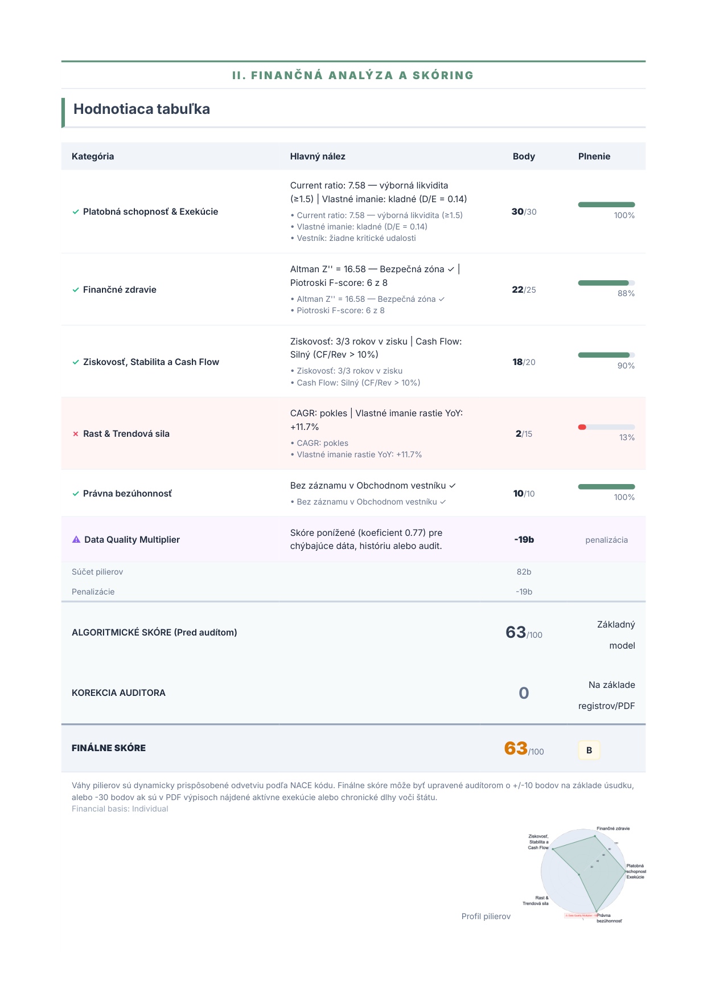
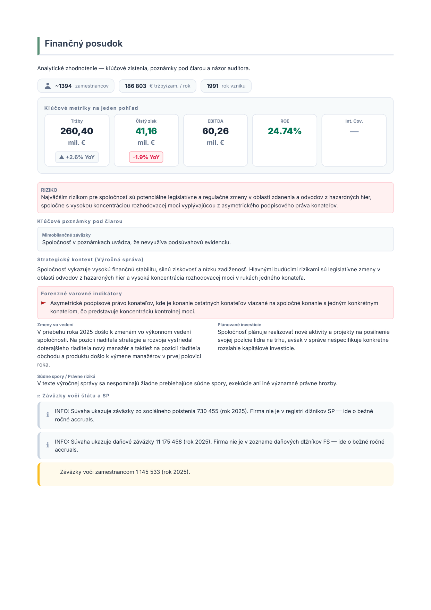
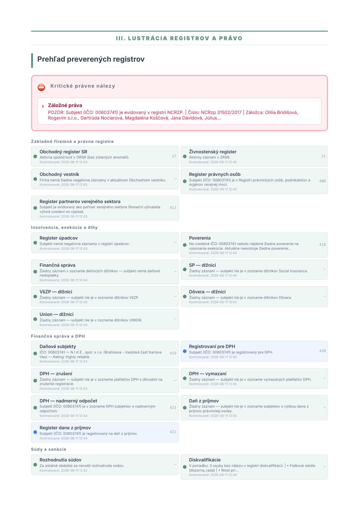
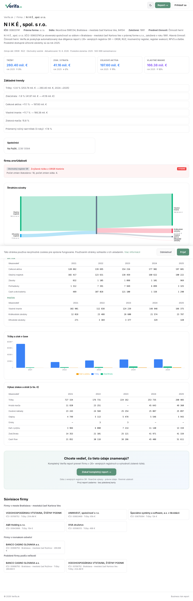

Verifa — CTA Preview
Tieto screenshoty ukazujú nové CTA na free stránke /firma/00603741 (N I K É). Dočasné zmeny — nie commitnuté.
1. Desktop — vrch free stránky (1200px)

2. Desktop — CTA sekcia (1200px)

3. Mobile — CTA sekcia (375px)

PDF Report — N I K É (00603741)
Platený PDF report — cover page, risk mapa, scorecard, verdict, registry checks.
4. PDF Cover Page (strana 1)

5. PDF Risk Map (strana 3)

6. PDF Forensic Evidence (strana 4)

7. PDF Scorecard (strana 5)

8. PDF Verdict (strana 6)

9. PDF Registry Overview (strana 13)

Free Page — Full Screenshot
